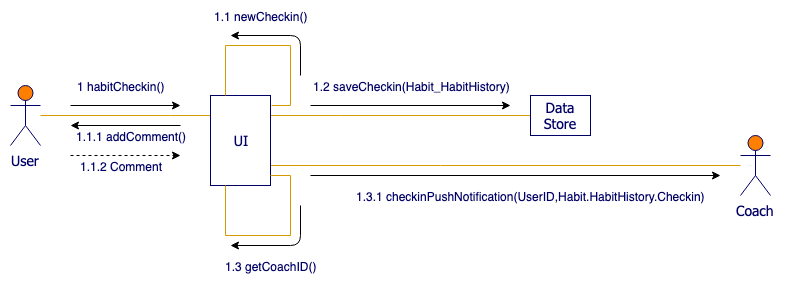

The Unified Modeling Language (UML) is a diagramming notation (language) that lets you visualize systems and software.
It's one of the most popular forms of diagramming in software development and became an ISO standard in 1997.
Since then, there have been a few updates to add extra UML diagram types and to support new technologies in programming.
There are two main categories and 14 different types of UML diagrams, each of which is used in a different situation.
Structure diagrams: show the static relationships between the components in the system.
Behavior diagrams: show how the components in the system react to each other,
they capture how the system changes, and in some diagrams, how it changes over time.
Use case diagrams in UML are used during the requirements phase of software development -
they usually put the system requirements into a diagram format,
and it's easy to see what actions a system must support at a glance.
Of course, there will be many use cases for your system,
and therefore you will usually need to draw many use case diagrams!
Along with other UML diagrams, such as activity, sequence and component diagrams,
use case diagrams help you to visualize your software and requirements,
before jumping in and starting to program.
The Unified Modeling Language or UML notation is probably the most well known and
regularly used visual representation of programs that you'll find in software development.
There are a wide range of diagrams to help you specify your data and processes before you start programming.
They help you clarify requirements and limitations, speed up the implementation,
provide a guide for thorough testing,
and prevent bugs from sneaking in throughout the entire software development process.
UML sequence diagrams are the first highly detailed behavioural diagrams that you will create
when using UML for software development.
They aren't so often used in business process modelling,
especially because they refer to the actual data and operation names
that will be used when programming.
That doesn't mean you can't use sequence diagrams:
they can be used to model business objects and their interactions in detail,
or by IT staff to detail how the elements in their infrastructure communicate and work together.
State diagrams have been used in programming to describe
the various possible states that a system can be in for decades.
They also quickly show which states lead to each other,
and what triggers a change of state.
Of course, you can use these diagrams for anything system or process
that has various states - library books, a publishing process,
even punishment and reward states for your kids.
They are very similar to flow diagrams, but UML has a notation specifically for
state diagrams, which they also call state machines or statecharts.
These UML diagrams are a combination of an activity diagram and sequence diagrams.
Each individual activity or interaction is placed in its own frame,
making it easier to see the different paths that need to be programmed
when there are complex if-then-else decisions.
Decisions are outside of the frames to show the flow of control between the various interactions.
The interactions themselves, inside the frames, are very similar to sequence diagrams.
Between the interactions you will have decisions (diamonds) and fork
and join nodes (solid horizontal rectangles), and connectors to show the flow of control.
There are also initial and final nodes to show the start and end of the overarching interaction.
Communication diagrams are another way to visualize the information
more commonly represented by UML sequence diagrams.
They are simpler than sequence diagrams and only show the messages
that pass between the objects or roles in a software program,
infrastructure, or any kind of process.
If you have multiple scenarios in one use case,
UML communication diagrams help you clearly identify
what messages (data) need to be sent between objects/roles in each specific scenario.

Like use case diagrams, activity diagrams model the behaviour of
users and systems as they follow a process.
They are a type of flow chart or workflow,
but they use slightly different shapes.
Start/End: Use a black or solid circle
to show where the diagram starts,
and a solid circle with a ring around it
to indicate the end of the process.
Actions: Use rounded rectangles with the name of the action.
Decisions: Use diamonds whenever there is a choice.
You can either include the decision as a question within the diamond,
or indicate the decision outcome on the outgoing arrows instead of
simply using yes/no labels.
Split/Join: Use a thick bar to indicate where activities split or join.